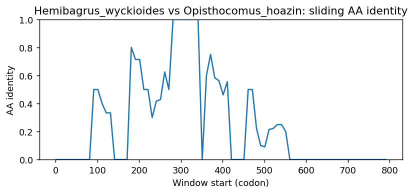

Ortholog Divergence Report
Input: SH2D1A.valid.longest.fa · N sequences: 496 · Aligned length: 793 codons
Reference: Hemibagrus_wyckioides
Quick risk overview
- LOW: 0
- INTERMEDIATE: 0
- HIGH: 122760


Composition & complexity per sequence
Saved as per_sequence_composition.csv. High low-complexity or repeat content can reduce BLAST sensitivity due to soft masking.
| id | GC | GC skew | CpG dens. | AA LCR frac | NT repeat frac | AA len | CDS len |
|---|---|---|---|---|---|---|---|
| Hemibagrus_wyckioides | 0.49444 | -0.03371 | 0.02228 | 0.0 | 0.70556 | 120 | 360 |
| Cygnus_olor | 0.60051 | -0.0339 | 0.05102 | 0.0 | 0.6972 | 131 | 393 |
| Peromyscus_californicus_insignis | 0.47154 | 0.13793 | 0.02446 | 0.0 | 0.74526 | 123 | 369 |
| Poecilia_mexicana | 0.62179 | 0.06529 | 0.08137 | 0.07692 | 0.73504 | 156 | 468 |
| Tupaia_chinensis | 0.49606 | 0.12169 | 0.03158 | 0.0 | 0.70604 | 127 | 381 |
| Archocentrus_centrarchus | 0.54978 | 0.04724 | 0.03905 | 0.0 | 0.73377 | 154 | 462 |
| Phodopus_roborovskii | 0.48413 | 0.13661 | 0.02122 | 0.0 | 0.75397 | 126 | 378 |
| Pongo_abelii | 0.48438 | 0.10753 | 0.02611 | 0.0 | 0.67708 | 128 | 384 |
| Phoca_vitulina | 0.49479 | 0.14737 | 0.03655 | 0.0 | 0.70052 | 128 | 384 |
| Pelmatolapia_mariae | 0.55411 | 0.03906 | 0.05206 | 0.0 | 0.70563 | 154 | 462 |
| Caretta_caretta | 0.47467 | 0.11236 | 0.02139 | 0.0 | 0.77867 | 125 | 375 |
| Passer_domesticus | 0.592 | -0.02703 | 0.04278 | 0.0 | 0.75467 | 125 | 375 |
| Odocoileus_virginianus | 0.51042 | 0.10204 | 0.04178 | 0.0 | 0.72135 | 128 | 384 |
| Hyla_sarda | 0.45085 | 0.08057 | 0.01927 | 0.0 | 0.73291 | 156 | 468 |
| Zonotrichia_albicollis | 0.59467 | -0.03139 | 0.04545 | 0.0 | 0.73333 | 125 | 375 |
| Calypte_anna | 0.57067 | 0.0 | 0.01872 | 0.0 | 0.69867 | 125 | 375 |
| Marmota_marmota_marmota | 0.46825 | 0.16384 | 0.01326 | 0.0 | 0.71164 | 126 | 378 |
| Marmota_monax | 0.47826 | 0.09091 | 0.01453 | 0.0 | 0.70773 | 138 | 414 |
| Pogoniulus_pusillus | 0.55652 | -0.03125 | 0.02326 | 0.0 | 0.71594 | 115 | 345 |
| Neofelis_nebulosa | 0.50109 | 0.13043 | 0.03712 | 0.0 | 0.71895 | 153 | 459 |
| Chlamydotis_macqueenii | 0.56533 | -0.01887 | 0.04813 | 0.0 | 0.73867 | 125 | 375 |
| Bos_indicus_x_Bos_taurus | 0.4974 | 0.13089 | 0.03916 | 0.0 | 0.74479 | 128 | 384 |
| Lynx_rufus | 0.51823 | 0.13568 | 0.04439 | 0.0 | 0.72917 | 128 | 384 |
| Molossus_molossus | 0.45932 | 0.10857 | 0.01579 | 0.0 | 0.67979 | 127 | 381 |
| Puntigrus_tetrazona | 0.60494 | 0.06122 | 0.09288 | 0.0 | 0.70988 | 108 | 324 |
| Crocodylus_porosus | 0.51093 | 0.05882 | 0.02466 | 0.0 | 0.70492 | 122 | 366 |
| Calidris_pugnax | 0.57377 | -0.06667 | 0.04384 | 0.0 | 0.64481 | 122 | 366 |
| Acinonyx_jubatus | 0.50109 | 0.12174 | 0.03712 | 0.0 | 0.68845 | 153 | 459 |
| Orycteropus_afer_afer | 0.51042 | 0.06122 | 0.04178 | 0.0 | 0.63281 | 128 | 384 |
| Balearica_regulorum_gibbericeps | 0.58871 | -0.07763 | 0.04852 | 0.0 | 0.68817 | 124 | 372 |
| Neophocaena_asiaeorientalis_asiaeorientalis | 0.48438 | 0.16129 | 0.02611 | 0.0 | 0.64323 | 128 | 384 |
| Jaculus_jaculus | 0.44986 | 0.10843 | 0.01902 | 0.0 | 0.7019 | 123 | 369 |
| Emydura_macquarii_macquarii | 0.46667 | 0.05143 | 0.01872 | 0.0 | 0.784 | 125 | 375 |
| Cavia_porcellus | 0.47581 | 0.12994 | 0.03504 | 0.0 | 0.77688 | 124 | 372 |
| Harpia_harpyja | 0.625 | 0.01961 | 0.06634 | 0.08824 | 0.68873 | 136 | 408 |
| Lagopus_leucura | 0.58871 | 0.0137 | 0.05121 | 0.0 | 0.71237 | 124 | 372 |
| Pangasianodon_hypophthalmus | 0.50278 | -0.00552 | 0.039 | 0.0 | 0.6 | 120 | 360 |
| Tympanuchus_pallidicinctus | 0.58333 | 0.01382 | 0.05121 | 0.0 | 0.68011 | 124 | 372 |
| Manis_pentadactyla | 0.4902 | 0.12 | 0.0309 | 0.10084 | 0.72549 | 119 | 357 |
| Ranitomeya_imitator | 0.4375 | 0.08844 | 0.0209 | 0.0 | 0.66667 | 112 | 336 |
| Bufo_gargarizans | 0.42262 | 0.12676 | 0.0209 | 0.0 | 0.69345 | 112 | 336 |
| Paramormyrops_kingsleyae | 0.48182 | 0.15723 | 0.02736 | 0.0 | 0.81212 | 110 | 330 |
| Moschus_berezovskii | 0.49479 | 0.13684 | 0.03133 | 0.0 | 0.72656 | 128 | 384 |
| Protopterus_annectens | 0.43467 | 0.11656 | 0.02674 | 0.0 | 0.67733 | 125 | 375 |
| Fulmarus_glacialis | 0.58933 | -0.06787 | 0.04278 | 0.0 | 0.73867 | 125 | 375 |
| Fundulus_heteroclitus | 0.64103 | 0.05333 | 0.08779 | 0.0 | 0.65812 | 156 | 468 |
| Scatophagus_argus | 0.53205 | -0.03614 | 0.02998 | 0.08333 | 0.68376 | 156 | 468 |
| Bos_javanicus | 0.5 | 0.125 | 0.03916 | 0.0 | 0.74479 | 128 | 384 |
| Symphalangus_syndactylus | 0.47917 | 0.09783 | 0.0235 | 0.0 | 0.6875 | 128 | 384 |
| Apteryx_mantelli | 0.65333 | 0.02857 | 0.08289 | 0.0 | 0.728 | 125 | 375 |
| Lathamus_discolor | 0.57333 | -0.05116 | 0.0508 | 0.0 | 0.688 | 125 | 375 |
| Rhinopithecus_roxellana | 0.48177 | 0.11351 | 0.02089 | 0.0 | 0.67708 | 128 | 384 |
| Gorilla_gorilla_gorilla | 0.48177 | 0.1027 | 0.0235 | 0.0 | 0.67708 | 128 | 384 |
| Pseudorca_crassidens | 0.48438 | 0.16129 | 0.02611 | 0.0 | 0.64323 | 128 | 384 |
| Prionailurus_viverrinus | 0.51042 | 0.14286 | 0.03916 | 0.0 | 0.72917 | 128 | 384 |
| Perognathus_longimembris_pacificus | 0.44444 | 0.17857 | 0.01061 | 0.0 | 0.71164 | 126 | 378 |
| Corvus_moneduloides | 0.58133 | 0.0 | 0.03743 | 0.0 | 0.77333 | 125 | 375 |
| Tachyglossus_aculeatus | 0.5755 | 0.07921 | 0.1 | 0.0 | 0.67806 | 117 | 351 |
| Pteropus_vampyrus | 0.46774 | 0.14943 | 0.02156 | 0.0 | 0.69086 | 124 | 372 |
| Kogia_breviceps | 0.49479 | 0.13684 | 0.03655 | 0.0 | 0.6901 | 128 | 384 |
| Leopardus_geoffroyi | 0.50763 | 0.11588 | 0.04148 | 0.0 | 0.69717 | 153 | 459 |
| Rissa_tridactyla | 0.59467 | -0.04036 | 0.05882 | 0.0 | 0.672 | 125 | 375 |
| Rhinopithecus_bieti | 0.48177 | 0.11351 | 0.02089 | 0.0 | 0.67708 | 128 | 384 |
| Buceros_rhinoceros_silvestris | 0.57867 | -0.03226 | 0.04813 | 0.096 | 0.73067 | 125 | 375 |
| Chelonoidis_abingdonii | 0.50457 | 0.11312 | 0.02288 | 0.0 | 0.74429 | 146 | 438 |
| Eleutherodactylus_coqui | 0.45833 | 0.11688 | 0.0209 | 0.10714 | 0.75 | 112 | 336 |
| Papio_anubis | 0.47656 | 0.12568 | 0.01828 | 0.0 | 0.67708 | 128 | 384 |
| Miniopterus_natalensis | 0.5 | 0.10053 | 0.03183 | 0.0 | 0.77513 | 126 | 378 |
| Gopherus_evgoodei | 0.5 | 0.12169 | 0.02122 | 0.0 | 0.72487 | 126 | 378 |
| Physeter_macrocephalus | 0.48698 | 0.14439 | 0.02872 | 0.0 | 0.6901 | 128 | 384 |
| Pseudopodoces_humilis | 0.58667 | -0.03636 | 0.04545 | 0.0 | 0.74933 | 125 | 375 |
| Rousettus_aegyptiacus | 0.46774 | 0.14943 | 0.02156 | 0.0 | 0.69624 | 124 | 372 |
| Pseudoliparis_swirei | 0.64187 | -0.03004 | 0.10773 | 0.0 | 0.6584 | 121 | 363 |
| Pezoporus_occidentalis | 0.56373 | 0.03478 | 0.0344 | 0.0 | 0.68627 | 136 | 408 |
| Anguilla_anguilla | 0.52533 | 0.05584 | 0.04011 | 0.0 | 0.688 | 125 | 375 |
| Doryrhamphus_excisus | 0.54012 | 0.07429 | 0.04644 | 0.0 | 0.71914 | 108 | 324 |
| Melozone_crissalis | 0.59733 | -0.02679 | 0.04278 | 0.0 | 0.74933 | 125 | 375 |
| Anas_acuta | 0.48889 | -0.00826 | 0.01619 | 0.0 | 0.67273 | 165 | 495 |
| Felis_catus | 0.51562 | 0.13131 | 0.04178 | 0.0 | 0.72917 | 128 | 384 |
| Strigops_habroptila | 0.57867 | -0.05991 | 0.04278 | 0.0 | 0.67733 | 125 | 375 |
| Phocoena_phocoena | 0.48438 | 0.16129 | 0.02611 | 0.0 | 0.64323 | 128 | 384 |
| Nothobranchius_furzeri | 0.60131 | 0.0 | 0.06987 | 0.0 | 0.66449 | 153 | 459 |
| Arvicola_amphibius | 0.47696 | 0.15909 | 0.02717 | 0.0 | 0.75881 | 123 | 369 |
| Tyto_alba | 0.57067 | -0.05607 | 0.03743 | 0.0 | 0.64533 | 125 | 375 |
| Camelus_bactrianus | 0.49344 | 0.1383 | 0.03684 | 0.0 | 0.67979 | 127 | 381 |
| Onychostruthus_taczanowskii | 0.584 | -0.0411 | 0.04011 | 0.0 | 0.74133 | 125 | 375 |
| Carassius_auratus | 0.5679 | 0.0 | 0.06811 | 0.0 | 0.69444 | 108 | 324 |
| Cervus_canadensis | 0.50521 | 0.1134 | 0.03916 | 0.0 | 0.72656 | 128 | 384 |
| Epinephelus_fuscoguttatus | 0.56838 | -0.01504 | 0.04283 | 0.0 | 0.7094 | 156 | 468 |
| Colius_striatus | 0.59467 | -0.0852 | 0.04278 | 0.0 | 0.688 | 125 | 375 |
| Pezoporus_flaviventris | 0.56618 | 0.0303 | 0.03686 | 0.0 | 0.68627 | 136 | 408 |
| Mesitornis_unicolor | 0.584 | -0.06849 | 0.04011 | 0.0 | 0.69333 | 125 | 375 |
| Chionomys_nivalis | 0.48238 | 0.16854 | 0.02989 | 0.0 | 0.75068 | 123 | 369 |
| Dama_dama | 0.50521 | 0.1134 | 0.04178 | 0.0 | 0.72656 | 128 | 384 |
| Trichomycterus_rosablanca | 0.53448 | 0.02151 | 0.05187 | 0.0 | 0.81034 | 116 | 348 |
| Antechinus_flavipes | 0.50933 | 0.01571 | 0.0508 | 0.0 | 0.672 | 125 | 375 |
| Rattus_rattus | 0.49471 | 0.1016 | 0.03448 | 0.0 | 0.75926 | 126 | 378 |
| Sturnira_hondurensis | 0.47507 | 0.14917 | 0.02105 | 0.09449 | 0.70079 | 127 | 381 |
| Melanerpes_formicivorus | 0.56183 | -0.08134 | 0.02426 | 0.0 | 0.64516 | 124 | 372 |
| Callithrix_jacchus | 0.48177 | 0.12432 | 0.0235 | 0.0 | 0.70312 | 128 | 384 |
| Solea_solea | 0.56506 | -0.02208 | 0.025 | 0.26738 | 0.82175 | 187 | 561 |
| Globicephala_melas | 0.48438 | 0.16129 | 0.02611 | 0.0 | 0.64323 | 128 | 384 |
| Oncorhynchus_tshawytscha | 0.51981 | -0.03139 | 0.02103 | 0.0 | 0.79021 | 143 | 429 |
| Misgurnus_anguillicaudatus | 0.47989 | 0.06587 | 0.02305 | 0.0 | 0.70115 | 116 | 348 |
| Lipotes_vexillifer | 0.48698 | 0.15508 | 0.02611 | 0.0 | 0.64323 | 128 | 384 |
| Vidua_macroura | 0.58161 | 0.01976 | 0.03226 | 0.0 | 0.77701 | 145 | 435 |
| Diceros_bicornis_minor | 0.48294 | 0.11957 | 0.02895 | 0.0 | 0.70604 | 127 | 381 |
| Serinus_canaria | 0.58133 | -0.06422 | 0.03476 | 0.0 | 0.73067 | 125 | 375 |
| Embiotoca_jacksoni | 0.55628 | 0.01167 | 0.04555 | 0.0 | 0.79437 | 154 | 462 |
| Balaenoptera_acutorostrata | 0.49479 | 0.13684 | 0.03655 | 0.0 | 0.69531 | 128 | 384 |
| Lagenorhynchus_obliquidens | 0.48177 | 0.16757 | 0.02611 | 0.0 | 0.66406 | 128 | 384 |
| Camarhynchus_parvulus | 0.58933 | -0.04072 | 0.03743 | 0.0 | 0.744 | 125 | 375 |
| Lonchura_striata | 0.59467 | -0.01345 | 0.04278 | 0.0 | 0.74133 | 125 | 375 |
| Zonotrichia_leucophrys_gambelii | 0.59733 | -0.02679 | 0.04545 | 0.0 | 0.744 | 125 | 375 |
| Pezoporus_wallicus | 0.56 | -0.05714 | 0.04011 | 0.0 | 0.71467 | 125 | 375 |
| Tinamus_guttatus | 0.62144 | 0.02426 | 0.05369 | 0.0 | 0.69849 | 199 | 597 |
| Camelus_dromedarius | 0.49344 | 0.1383 | 0.03684 | 0.0 | 0.67979 | 127 | 381 |
| Passer_montanus | 0.58571 | 0.02439 | 0.03819 | 0.0 | 0.75238 | 140 | 420 |
| Pongo_pygmaeus | 0.48177 | 0.11351 | 0.0235 | 0.0 | 0.67708 | 128 | 384 |
| Dendropsophus_ebraccatus | 0.43492 | 0.08029 | 0.01274 | 0.0 | 0.69206 | 105 | 315 |
| Triplophysa_rosa | 0.4774 | 0.05325 | 0.01983 | 0.0 | 0.63277 | 118 | 354 |
| Nanorana_parkeri | 0.43111 | 0.17526 | 0.02004 | 0.0 | 0.73111 | 150 | 450 |
| Gavialis_gangeticus | 0.51639 | 0.0582 | 0.0274 | 0.0 | 0.71038 | 122 | 366 |
| Agelaius_phoeniceus | 0.59467 | -0.04036 | 0.04813 | 0.0 | 0.72267 | 125 | 375 |
| Mirounga_angustirostris | 0.48958 | 0.15957 | 0.03394 | 0.0 | 0.69531 | 128 | 384 |
| Prinia_subflava | 0.63796 | 0.02 | 0.0607 | 0.0622 | 0.70813 | 209 | 627 |
| Charadrius_vociferus | 0.57333 | -0.04186 | 0.0508 | 0.0 | 0.68267 | 125 | 375 |
| Alligator_sinensis | 0.50413 | 0.07104 | 0.0221 | 0.0 | 0.72176 | 121 | 363 |
| Microtus_oregoni | 0.47154 | 0.18391 | 0.02717 | 0.0 | 0.76694 | 123 | 369 |
| Vulpes_lagopus | 0.48698 | 0.13369 | 0.02872 | 0.0 | 0.70573 | 128 | 384 |
| Carlito_syrichta | 0.47396 | 0.13187 | 0.02611 | 0.0 | 0.71354 | 128 | 384 |
| Struthio_camelus | 0.61333 | 0.04348 | 0.05348 | 0.104 | 0.74133 | 125 | 375 |
| Microcebus_murinus | 0.48438 | 0.10753 | 0.02089 | 0.0 | 0.70573 | 128 | 384 |
| Manacus_candei | 0.58667 | -0.05455 | 0.04011 | 0.0 | 0.69333 | 125 | 375 |
| Chrysemys_picta_bellii | 0.5137 | 0.10222 | 0.02288 | 0.0 | 0.73516 | 146 | 438 |
| Delphinapterus_leucas | 0.48438 | 0.16129 | 0.02611 | 0.0 | 0.64323 | 128 | 384 |
| Hypanus_sabinus | 0.46389 | 0.08982 | 0.03621 | 0.0 | 0.65833 | 120 | 360 |
| Panthera_uncia | 0.51042 | 0.12245 | 0.04178 | 0.0 | 0.72396 | 128 | 384 |
| Apodemus_sylvaticus | 0.48677 | 0.09783 | 0.02918 | 0.0 | 0.7328 | 126 | 378 |
| Panthera_pardus | 0.50545 | 0.12069 | 0.0393 | 0.0 | 0.71895 | 153 | 459 |
| Sebastes_umbrosus | 0.57692 | -0.04444 | 0.05567 | 0.0 | 0.70299 | 156 | 468 |
| Mastomys_coucha | 0.48677 | 0.08696 | 0.03183 | 0.0 | 0.75397 | 126 | 378 |
| Peromyscus_leucopus | 0.47425 | 0.14286 | 0.02717 | 0.0 | 0.76152 | 123 | 369 |
| Capricornis_sumatraensis | 0.5 | 0.125 | 0.03655 | 0.0 | 0.76042 | 128 | 384 |
| Galeopterus_variegatus | 0.48438 | 0.12903 | 0.0235 | 0.0 | 0.72917 | 128 | 384 |
| Apus_apus | 0.592 | -0.06306 | 0.05615 | 0.0 | 0.70133 | 125 | 375 |
| Gasterosteus_aculeatus | 0.62447 | 0.03378 | 0.08034 | 0.0 | 0.73418 | 158 | 474 |
| Puma_concolor | 0.50781 | 0.12821 | 0.03655 | 0.0 | 0.71354 | 128 | 384 |
| Grus_americana | 0.58333 | 0.0 | 0.04176 | 0.0 | 0.67361 | 144 | 432 |
| Theropithecus_gelada | 0.47656 | 0.12568 | 0.01828 | 0.0 | 0.67708 | 128 | 384 |
| Macaca_nemestrina | 0.47917 | 0.11957 | 0.01828 | 0.0 | 0.67708 | 128 | 384 |
| Coregonus_clupeaformis | 0.52644 | -0.03057 | 0.02995 | 0.10345 | 0.78161 | 145 | 435 |
| Cervus_elaphus | 0.50521 | 0.1134 | 0.03916 | 0.0 | 0.72656 | 128 | 384 |
| Panthera_onca | 0.50545 | 0.12069 | 0.0393 | 0.0 | 0.71895 | 153 | 459 |
| Phacochoerus_africanus | 0.48177 | 0.11351 | 0.03394 | 0.0 | 0.70312 | 128 | 384 |
| Columba_livia | 0.57867 | -0.06912 | 0.04545 | 0.0 | 0.688 | 125 | 375 |
| Equus_caballus | 0.47769 | 0.12088 | 0.02632 | 0.0 | 0.71129 | 127 | 381 |
| Ambystoma_mexicanum | 0.47287 | 0.1694 | 0.03627 | 0.0 | 0.79587 | 129 | 387 |
| Sarcophilus_harrisii | 0.50667 | 0.02105 | 0.04813 | 0.0 | 0.672 | 125 | 375 |
| Corvus_brachyrhynchos | 0.55684 | 0.10727 | 0.03089 | 0.11561 | 0.77264 | 173 | 519 |
| Oxyura_jamaicensis | 0.59288 | -0.02146 | 0.05102 | 0.0 | 0.73028 | 131 | 393 |
| Pleurodeles_waltl | 0.46472 | 0.10995 | 0.03902 | 0.0 | 0.78345 | 137 | 411 |
| Esox_lucius | 0.49433 | 0.02752 | 0.02045 | 0.08844 | 0.69388 | 147 | 441 |
| Emys_orbicularis | 0.51598 | 0.11504 | 0.02288 | 0.0 | 0.73516 | 146 | 438 |
| Melospiza_melodia_melodia | 0.584 | -0.03196 | 0.04278 | 0.0 | 0.72533 | 125 | 375 |
| Rhinatrema_bivittatum | 0.47619 | 0.11111 | 0.01592 | 0.0 | 0.71958 | 126 | 378 |
| Cygnus_atratus | 0.56944 | 0.02439 | 0.03777 | 0.0 | 0.72421 | 168 | 504 |
| Athene_cunicularia | 0.57867 | -0.05991 | 0.04545 | 0.0 | 0.69333 | 125 | 375 |
| Neopelma_chrysocephalum | 0.584 | -0.05023 | 0.03743 | 0.0 | 0.69333 | 125 | 375 |
| Onychostoma_macrolepis | 0.5679 | 0.02174 | 0.0805 | 0.0 | 0.70988 | 108 | 324 |
| Corvus_hawaiiensis | 0.584 | 0.00457 | 0.04011 | 0.0 | 0.77333 | 125 | 375 |
| Falco_cherrug | 0.57895 | 0.02165 | 0.0402 | 0.0 | 0.70175 | 133 | 399 |
| Alosa_sapidissima | 0.57917 | -0.10072 | 0.06681 | 0.19375 | 0.76667 | 160 | 480 |
| Hippoglossus_stenolepis | 0.58691 | -0.00348 | 0.05533 | 0.15337 | 0.73824 | 163 | 489 |
| Pelodiscus_sinensis | 0.49867 | 0.1016 | 0.02674 | 0.0 | 0.76533 | 125 | 375 |
| Nomascus_leucogenys | 0.47917 | 0.1087 | 0.02089 | 0.0 | 0.67708 | 128 | 384 |
| Ammospiza_nelsoni | 0.58667 | -0.02727 | 0.04011 | 0.0 | 0.73067 | 125 | 375 |
| Astatotilapia_calliptera | 0.55628 | 0.03502 | 0.04989 | 0.07792 | 0.70563 | 154 | 462 |
| Piliocolobus_tephrosceles | 0.48177 | 0.12432 | 0.01828 | 0.0 | 0.67188 | 128 | 384 |
| Xenopus_tropicalis | 0.47619 | 0.1875 | 0.02687 | 0.0 | 0.78274 | 112 | 336 |
| Salvelinus_namaycush | 0.5338 | -0.04803 | 0.03037 | 0.09091 | 0.77389 | 143 | 429 |
| Vombatus_ursinus | 0.50829 | -0.05797 | 0.02583 | 0.16575 | 0.72744 | 181 | 543 |
| Phyllopteryx_taeniolatus | 0.51754 | 0.08475 | 0.03519 | 0.0 | 0.72515 | 114 | 342 |
| Haliaeetus_albicilla | 0.6201 | 0.01976 | 0.05651 | 0.11029 | 0.67402 | 136 | 408 |
| Sardina_pilchardus | 0.57557 | -0.06475 | 0.06846 | 0.13665 | 0.77433 | 161 | 483 |
| Periophthalmus_magnuspinnatus | 0.59355 | 0.01449 | 0.03664 | 0.11613 | 0.75054 | 155 | 465 |
| Pseudopipra_pipra | 0.58933 | -0.05882 | 0.04545 | 0.0 | 0.69333 | 125 | 375 |
| Loxodonta_africana | 0.4974 | 0.07853 | 0.03133 | 0.09375 | 0.69531 | 128 | 384 |
| Ictalurus_furcatus | 0.51327 | 0.04598 | 0.04142 | 0.0 | 0.66667 | 113 | 339 |
| Odobenus_rosmarus_divergens | 0.4974 | 0.1623 | 0.03394 | 0.0 | 0.70573 | 128 | 384 |
| Malaclemys_terrapin_pileata | 0.5137 | 0.09333 | 0.02288 | 0.0 | 0.74429 | 146 | 438 |
| Haliaeetus_leucocephalus | 0.60267 | -0.04425 | 0.05615 | 0.0 | 0.67467 | 125 | 375 |
| Suricata_suricatta | 0.5 | 0.13542 | 0.03133 | 0.0 | 0.72917 | 128 | 384 |
| Chanos_chanos | 0.54701 | 0.0625 | 0.04571 | 0.0 | 0.7094 | 117 | 351 |
| Canis_lupus_familiaris | 0.48438 | 0.13978 | 0.02611 | 0.0 | 0.70573 | 128 | 384 |
| Meles_meles | 0.47656 | 0.13661 | 0.0235 | 0.0 | 0.6875 | 128 | 384 |
| Condylura_cristata | 0.46875 | 0.06667 | 0.02089 | 0.0 | 0.70052 | 128 | 384 |
| Sapajus_apella | 0.47656 | 0.12568 | 0.02089 | 0.0 | 0.72396 | 128 | 384 |
| Neoarius_graeffei | 0.50617 | 0.0122 | 0.04334 | 0.0 | 0.70988 | 108 | 324 |
| Zalophus_californianus | 0.4974 | 0.1623 | 0.03394 | 0.0 | 0.70573 | 128 | 384 |
| Terrapene_triunguis | 0.51826 | 0.11013 | 0.02517 | 0.0 | 0.73973 | 146 | 438 |
| Salvelinus_fontinalis | 0.53147 | -0.04386 | 0.03037 | 0.09091 | 0.77855 | 143 | 429 |
| Macaca_fascicularis | 0.47917 | 0.11957 | 0.01828 | 0.0 | 0.67708 | 128 | 384 |
| Apteryx_rowi | 0.61852 | 0.08982 | 0.07807 | 0.0 | 0.7963 | 90 | 270 |
| Cynocephalus_volans | 0.48819 | 0.12903 | 0.02632 | 0.0 | 0.74016 | 127 | 381 |
| Saimiri_boliviensis | 0.46875 | 0.12222 | 0.01305 | 0.0 | 0.67188 | 128 | 384 |
| Falco_naumanni | 0.57393 | 0.02183 | 0.03518 | 0.0 | 0.70175 | 133 | 399 |
| Nyctibius_grandis | 0.58933 | -0.08597 | 0.04278 | 0.0 | 0.71467 | 125 | 375 |
| Equus_quagga | 0.47507 | 0.12707 | 0.02632 | 0.0 | 0.71129 | 127 | 381 |
| Meriones_unguiculatus | 0.46032 | 0.10345 | 0.01592 | 0.09524 | 0.7381 | 126 | 378 |
| Meleagris_gallopavo | 0.58065 | 0.01852 | 0.04852 | 0.0 | 0.71237 | 124 | 372 |
| Oenanthe_melanoleuca | 0.6 | -0.05778 | 0.04813 | 0.0 | 0.74667 | 125 | 375 |
| Dipodomys_merriami | 0.45503 | 0.18605 | 0.01061 | 0.0 | 0.7381 | 126 | 378 |
| Coturnix_japonica | 0.57796 | -0.01395 | 0.05391 | 0.09677 | 0.76075 | 124 | 372 |
| Trachemys_scripta_elegans | 0.5137 | 0.09333 | 0.02288 | 0.0 | 0.74429 | 146 | 438 |
| Neogale_vison | 0.48656 | 0.14917 | 0.02965 | 0.0 | 0.66398 | 124 | 372 |
| Danio_rerio | 0.50926 | 0.01818 | 0.04954 | 0.0 | 0.65741 | 108 | 324 |
| Ursus_arctos | 0.50521 | 0.13402 | 0.04439 | 0.0 | 0.70573 | 128 | 384 |
| Canis_lupus_dingo | 0.48438 | 0.13978 | 0.02611 | 0.0 | 0.70573 | 128 | 384 |
| Erinaceus_europaeus | 0.46875 | 0.11111 | 0.02611 | 0.0 | 0.66406 | 128 | 384 |
| Pseudorasbora_parva | 0.52778 | 0.02924 | 0.05573 | 0.0 | 0.62963 | 108 | 324 |
| Phyllostomus_discolor | 0.47769 | 0.14286 | 0.02105 | 0.09449 | 0.73753 | 127 | 381 |
| Scomber_scombrus | 0.54915 | 0.02724 | 0.03854 | 0.07692 | 0.65598 | 156 | 468 |
| Gopherus_flavomarginatus | 0.50265 | 0.12632 | 0.02653 | 0.0 | 0.73545 | 126 | 378 |
| Myotis_lucifugus | 0.48031 | 0.10383 | 0.02105 | 0.0 | 0.69554 | 127 | 381 |
| Lutra_lutra | 0.48602 | 0.15044 | 0.02802 | 0.0 | 0.65161 | 155 | 465 |
| Melopsittacus_undulatus | 0.552 | -0.10145 | 0.03743 | 0.0 | 0.656 | 125 | 375 |
| Capra_hircus | 0.5 | 0.125 | 0.03655 | 0.0 | 0.76042 | 128 | 384 |
| Myotis_daubentonii | 0.47769 | 0.0989 | 0.02105 | 0.0 | 0.69554 | 127 | 381 |
| Pygocentrus_nattereri | 0.53097 | -0.03333 | 0.04438 | 0.0 | 0.71091 | 113 | 339 |
| Phalacrocorax_carbo | 0.59542 | 0.00855 | 0.03827 | 0.0916 | 0.71756 | 131 | 393 |
| Chelonia_mydas | 0.47733 | 0.09497 | 0.02674 | 0.0 | 0.792 | 125 | 375 |
| Lontra_canadensis | 0.48177 | 0.13514 | 0.02872 | 0.0 | 0.69531 | 128 | 384 |
| Nyctereutes_procyonoides | 0.49219 | 0.11111 | 0.03394 | 0.0 | 0.72656 | 128 | 384 |
| Apaloderma_vittatum | 0.576 | -0.0463 | 0.03743 | 0.096 | 0.712 | 125 | 375 |
| Marmota_flaviventris | 0.46825 | 0.16384 | 0.01592 | 0.0 | 0.69048 | 126 | 378 |
| Bubalus_kerabau | 0.49219 | 0.13228 | 0.03916 | 0.0 | 0.7474 | 128 | 384 |
| Molothrus_ater | 0.592 | -0.03604 | 0.04278 | 0.0 | 0.73867 | 125 | 375 |
| Desmodus_rotundus | 0.47769 | 0.14286 | 0.02368 | 0.09449 | 0.72178 | 127 | 381 |
| Epinephelus_moara | 0.56624 | -0.02642 | 0.04283 | 0.0 | 0.73077 | 156 | 468 |
| Oryctolagus_cuniculus | 0.48656 | 0.11602 | 0.03235 | 0.0 | 0.68548 | 124 | 372 |
| Rana_temporaria | 0.44745 | 0.19463 | 0.01807 | 0.0 | 0.70871 | 111 | 333 |
| Panthera_tigris | 0.51562 | 0.13131 | 0.04178 | 0.0 | 0.72917 | 128 | 384 |
| Siniperca_chuatsi | 0.55556 | 0.01538 | 0.03426 | 0.0 | 0.68162 | 156 | 468 |
| Chroicocephalus_ridibundus | 0.592 | -0.04505 | 0.05615 | 0.0 | 0.67733 | 125 | 375 |
| Scleropages_formosus | 0.46667 | 0.08333 | 0.0195 | 0.0 | 0.64444 | 120 | 360 |
| Tachysurus_vachellii | 0.48942 | 0.01622 | 0.02122 | 0.0 | 0.72487 | 126 | 378 |
| Ammospiza_caudacuta | 0.58667 | -0.02727 | 0.04011 | 0.0 | 0.73067 | 125 | 375 |
| Homo_sapiens | 0.48177 | 0.1027 | 0.0235 | 0.0 | 0.67708 | 128 | 384 |
| Sinocyclocheilus_anshuiensis | 0.55247 | 0.01676 | 0.07121 | 0.0 | 0.69753 | 108 | 324 |
| Orcinus_orca | 0.48438 | 0.16129 | 0.02611 | 0.0 | 0.64323 | 128 | 384 |
| Monodon_monoceros | 0.48438 | 0.16129 | 0.02611 | 0.0 | 0.64323 | 128 | 384 |
| Ursus_maritimus | 0.50521 | 0.13402 | 0.04439 | 0.0 | 0.70573 | 128 | 384 |
| Arvicanthis_niloticus | 0.47222 | 0.07843 | 0.02552 | 0.0 | 0.78704 | 144 | 432 |
| Myotis_davidii | 0.48031 | 0.10383 | 0.02105 | 0.0 | 0.69554 | 127 | 381 |
| Urocitellus_parryii | 0.47244 | 0.14444 | 0.01842 | 0.0 | 0.71129 | 127 | 381 |
| Indicator_indicator | 0.55108 | -0.05366 | 0.02426 | 0.0 | 0.65591 | 124 | 372 |
| Gallus_gallus | 0.57258 | -0.01408 | 0.04582 | 0.09677 | 0.70161 | 124 | 372 |
| Neolamprologus_brichardi | 0.55195 | 0.04314 | 0.04989 | 0.07792 | 0.67965 | 154 | 462 |
| Phascolarctos_cinereus | 0.48533 | 0.07692 | 0.03743 | 0.0 | 0.65067 | 125 | 375 |
| Cebus_imitator | 0.47135 | 0.11602 | 0.02089 | 0.0 | 0.72396 | 128 | 384 |
| Anguilla_rostrata | 0.528 | 0.05051 | 0.04011 | 0.0 | 0.688 | 125 | 375 |
| Mustela_putorius_furo | 0.48656 | 0.13812 | 0.02965 | 0.0 | 0.66398 | 124 | 372 |
| Lemur_catta | 0.37939 | 0.06358 | 0.00879 | 0.08553 | 0.6557 | 152 | 456 |
| Xiphophorus_hellerii | 0.64119 | 0.06623 | 0.09362 | 0.0 | 0.73673 | 157 | 471 |
| Hylobates_moloch | 0.48177 | 0.1027 | 0.0235 | 0.0 | 0.67708 | 128 | 384 |
| Notothenia_coriiceps | 0.59524 | 0.06182 | 0.05857 | 0.0 | 0.70996 | 154 | 462 |
| Danio_aesculapii | 0.50926 | 0.01818 | 0.04954 | 0.0 | 0.66049 | 108 | 324 |
| Pipra_filicauda | 0.584 | -0.05936 | 0.03743 | 0.0 | 0.69333 | 125 | 375 |
| Alosa_alosa | 0.57917 | -0.10072 | 0.06472 | 0.19375 | 0.76667 | 160 | 480 |
| Saccopteryx_leptura | 0.47244 | 0.12222 | 0.02105 | 0.0 | 0.69554 | 127 | 381 |
| Bufo_bufo | 0.40118 | 0.14706 | 0.02071 | 0.0 | 0.64307 | 113 | 339 |
| Macaca_thibetana_thibetana | 0.47917 | 0.11957 | 0.01828 | 0.0 | 0.67708 | 128 | 384 |
| Catharus_ustulatus | 0.59233 | 0.04453 | 0.04327 | 0.0 | 0.753 | 139 | 417 |
| Chrysochloris_asiatica | 0.49344 | 0.1383 | 0.02368 | 0.0 | 0.71129 | 127 | 381 |
| Saccopteryx_bilineata | 0.47769 | 0.12088 | 0.02632 | 0.0 | 0.67454 | 127 | 381 |
| Fukomys_damarensis | 0.46982 | 0.17318 | 0.02895 | 0.0 | 0.73491 | 127 | 381 |
| Haemorhous_mexicanus | 0.592 | -0.04505 | 0.04278 | 0.0 | 0.72 | 125 | 375 |
| Hyperolius_riggenbachi | 0.48649 | 0.11111 | 0.01205 | 0.0 | 0.79279 | 111 | 333 |
| Sinocyclocheilus_grahami | 0.55247 | 0.00559 | 0.07121 | 0.0 | 0.69753 | 108 | 324 |
| Myodes_glareolus | 0.47425 | 0.13143 | 0.02174 | 0.0 | 0.73984 | 123 | 369 |
| Haplochromis_burtoni | 0.55411 | 0.03125 | 0.04989 | 0.07792 | 0.70996 | 154 | 462 |
| Elephantulus_edwardii | 0.48346 | 0.04211 | 0.02551 | 0.0 | 0.73537 | 131 | 393 |
| Dicentrarchus_labrax | 0.55128 | -0.0155 | 0.0364 | 0.0 | 0.63675 | 156 | 468 |
| Dromaius_novaehollandiae | 0.64 | 0.025 | 0.06952 | 0.0 | 0.76 | 125 | 375 |
| Pelobates_fuscus | 0.44643 | 0.05333 | 0.0209 | 0.0 | 0.77976 | 112 | 336 |
| Motacilla_alba_alba | 0.58974 | 0.02767 | 0.03972 | 0.0 | 0.74592 | 143 | 429 |
| Sinocyclocheilus_rhinocerous | 0.51155 | -0.01935 | 0.06291 | 0.0 | 0.67987 | 101 | 303 |
| Salmo_trutta | 0.52448 | -0.04889 | 0.02103 | 0.0 | 0.80886 | 143 | 429 |
| Neomonachus_schauinslandi | 0.49219 | 0.15344 | 0.03394 | 0.0 | 0.70573 | 128 | 384 |
| Castor_canadensis | 0.47619 | 0.11111 | 0.02387 | 0.0 | 0.70106 | 126 | 378 |
| Patagioenas_fasciata | 0.57067 | -0.03738 | 0.04545 | 0.0 | 0.688 | 125 | 375 |
| Hippopotamus_amphibius_kiboko | 0.4974 | 0.09948 | 0.02872 | 0.0 | 0.70052 | 128 | 384 |
| Muntiacus_reevesi | 0.50521 | 0.12371 | 0.03916 | 0.0 | 0.73177 | 128 | 384 |
| Falco_biarmicus | 0.57895 | 0.02165 | 0.0402 | 0.0 | 0.70175 | 133 | 399 |
| Rattus_norvegicus | 0.49735 | 0.11702 | 0.03714 | 0.0 | 0.74339 | 126 | 378 |
| Chanodichthys_erythropterus | 0.51852 | 0.07143 | 0.04644 | 0.0 | 0.62346 | 108 | 324 |
| Mauremys_mutica | 0.51142 | 0.10714 | 0.02059 | 0.0 | 0.75799 | 146 | 438 |
| Lagenorhynchus_albirostris | 0.48438 | 0.16129 | 0.02611 | 0.0 | 0.64323 | 128 | 384 |
| Mandrillus_leucophaeus | 0.47917 | 0.11957 | 0.01828 | 0.0 | 0.67708 | 128 | 384 |
| Xiphophorus_couchianus | 0.63694 | 0.06667 | 0.08723 | 0.0 | 0.71125 | 157 | 471 |
| Geotrypetes_seraphini | 0.49862 | 0.04972 | 0.03039 | 0.0 | 0.66667 | 121 | 363 |
| Dryobates_pubescens | 0.56452 | -0.06667 | 0.02426 | 0.0 | 0.64516 | 124 | 372 |
| Balaenoptera_ricei | 0.49219 | 0.13228 | 0.03394 | 0.0 | 0.69531 | 128 | 384 |
| Cynoglossus_semilaevis | 0.59568 | -0.01554 | 0.09907 | 0.0 | 0.75617 | 108 | 324 |
| Trachypithecus_francoisi | 0.47934 | 0.09195 | 0.0221 | 0.0 | 0.66667 | 121 | 363 |
| Delphinus_delphis | 0.48438 | 0.16129 | 0.02611 | 0.0 | 0.64323 | 128 | 384 |
| Onychomys_torridus | 0.45238 | 0.1462 | 0.01592 | 0.0 | 0.77249 | 126 | 378 |
| Opisthocomus_hoazin | 0.50314 | 0.09167 | 0.03571 | 0.08176 | 0.66457 | 159 | 477 |
| Seriola_aureovittata | 0.55626 | -0.01527 | 0.04043 | 0.0 | 0.70701 | 157 | 471 |
| Ochotona_princeps | 0.464 | 0.12644 | 0.02406 | 0.0 | 0.70667 | 125 | 375 |
| Eschrichtius_robustus | 0.49219 | 0.13228 | 0.03394 | 0.0 | 0.69531 | 128 | 384 |
| Peromyscus_maniculatus_bairdii | 0.46759 | 0.10891 | 0.01856 | 0.0 | 0.78704 | 144 | 432 |
| Corvus_kubaryi | 0.58133 | 0.0 | 0.03743 | 0.0 | 0.77333 | 125 | 375 |
| Egretta_garzetta | 0.59467 | -0.04933 | 0.0508 | 0.0 | 0.70133 | 125 | 375 |
| Pteronotus_mesoamericanus | 0.46982 | 0.11732 | 0.01842 | 0.0 | 0.69554 | 127 | 381 |
| Aphelocoma_coerulescens | 0.57867 | -0.00461 | 0.03209 | 0.0 | 0.752 | 125 | 375 |
| Pan_paniscus | 0.48698 | 0.1016 | 0.02611 | 0.0 | 0.67708 | 128 | 384 |
| Ailuropoda_melanoleuca | 0.5 | 0.125 | 0.03916 | 0.0 | 0.71615 | 128 | 384 |
| Parus_major | 0.5908 | 0.01946 | 0.03917 | 0.0 | 0.73333 | 145 | 435 |
| Taeniopygia_guttata | 0.57701 | 0.02789 | 0.03687 | 0.0 | 0.78621 | 145 | 435 |
| Macaca_mulatta | 0.47917 | 0.11957 | 0.01828 | 0.0 | 0.67708 | 128 | 384 |
| Nothoprocta_perdicaria | 0.66667 | -0.00787 | 0.07632 | 0.0 | 0.71654 | 127 | 381 |
| Pterocles_gutturalis | 0.58667 | -0.02727 | 0.04278 | 0.0 | 0.66133 | 125 | 375 |
| Equus_asinus | 0.47507 | 0.12707 | 0.02632 | 0.0 | 0.71129 | 127 | 381 |
| Pteropus_giganteus | 0.46505 | 0.15607 | 0.02156 | 0.0 | 0.71237 | 124 | 372 |
| Aquila_chrysaetos_chrysaetos | 0.62745 | 0.00781 | 0.0688 | 0.08824 | 0.67157 | 136 | 408 |
| Ursus_americanus | 0.5026 | 0.1399 | 0.04178 | 0.0 | 0.70573 | 128 | 384 |
| Chiroxiphia_lanceolata | 0.58133 | -0.04587 | 0.03743 | 0.0 | 0.69867 | 125 | 375 |
| Microtus_ochrogaster | 0.47425 | 0.17714 | 0.02717 | 0.0 | 0.75068 | 123 | 369 |
| Enhydra_lutris_kenyoni | 0.48602 | 0.15044 | 0.02802 | 0.0 | 0.65161 | 155 | 465 |
| Aotus_nancymaae | 0.47917 | 0.13043 | 0.02089 | 0.0 | 0.70312 | 128 | 384 |
| Dipodomys_ordii | 0.45767 | 0.17919 | 0.01061 | 0.0 | 0.7381 | 126 | 378 |
| Pan_troglodytes | 0.48438 | 0.10753 | 0.02611 | 0.0 | 0.67708 | 128 | 384 |
| Nycticebus_coucang | 0.49067 | 0.09783 | 0.02406 | 0.0 | 0.70133 | 125 | 375 |
| Puma_yagouaroundi | 0.50109 | 0.12174 | 0.03493 | 0.0 | 0.68845 | 153 | 459 |
| Propithecus_coquereli | 0.49219 | 0.11111 | 0.02872 | 0.0 | 0.71094 | 128 | 384 |
| Pipistrellus_kuhlii | 0.47769 | 0.10989 | 0.01842 | 0.0 | 0.69816 | 127 | 381 |
| Eumetopias_jubatus | 0.4974 | 0.1623 | 0.03394 | 0.0 | 0.70573 | 128 | 384 |
| Myotis_brandtii | 0.48031 | 0.10383 | 0.02105 | 0.0 | 0.69554 | 127 | 381 |
| Nipponia_nippon | 0.57867 | -0.04147 | 0.04278 | 0.0 | 0.66667 | 125 | 375 |
| Trichosurus_vulpecula | 0.488 | 0.07104 | 0.03743 | 0.0 | 0.61333 | 125 | 375 |
| Myotis_myotis | 0.47244 | 0.1 | 0.02105 | 0.0 | 0.69554 | 127 | 381 |
| Melospiza_georgiana | 0.584 | -0.03196 | 0.04011 | 0.0 | 0.72533 | 125 | 375 |
| Alligator_mississippiensis | 0.50413 | 0.07104 | 0.01934 | 0.0 | 0.72176 | 121 | 363 |
| Seriola_lalandi_dorsalis | 0.55626 | -0.0229 | 0.04043 | 0.0 | 0.70701 | 157 | 471 |
| Artibeus_jamaicensis | 0.47507 | 0.14917 | 0.01579 | 0.09449 | 0.72178 | 127 | 381 |
| Hyaena_hyaena | 0.51562 | 0.10101 | 0.03916 | 0.0 | 0.71094 | 128 | 384 |
| Dermochelys_coriacea | 0.41954 | -0.0411 | 0.02017 | 0.0 | 0.7069 | 116 | 348 |
| Mauremys_reevesii | 0.5137 | 0.11111 | 0.02517 | 0.0 | 0.77169 | 146 | 438 |
| Dasypus_novemcinctus | 0.48819 | 0.09677 | 0.03158 | 0.0 | 0.69029 | 127 | 381 |
| Talpa_occidentalis | 0.47043 | 0.09714 | 0.01348 | 0.0 | 0.69892 | 124 | 372 |
| Eleginops_maclovinus | 0.58333 | 0.04029 | 0.06424 | 0.0 | 0.71368 | 156 | 468 |
| Neopsephotus_bourkii | 0.57506 | -0.02655 | 0.03571 | 0.0 | 0.72265 | 131 | 393 |
| Dromiciops_gliroides | 0.50933 | 0.03665 | 0.04011 | 0.0 | 0.73867 | 125 | 375 |
| Sus_scrofa | 0.47656 | 0.10383 | 0.03394 | 0.0 | 0.70312 | 128 | 384 |
| Lepus_europaeus | 0.49231 | 0.09375 | 0.03342 | 0.0 | 0.66923 | 130 | 390 |
| Astyanax_mexicanus | 0.5518 | 0.09388 | 0.05869 | 0.10135 | 0.75225 | 148 | 444 |
| Megalobrama_amblycephala | 0.51543 | 0.07784 | 0.04025 | 0.0 | 0.62346 | 108 | 324 |
| Leptonychotes_weddellii | 0.49219 | 0.15344 | 0.03394 | 0.0 | 0.70573 | 128 | 384 |
| Mus_caroli | 0.45679 | -0.00901 | 0.01653 | 0.0 | 0.69136 | 81 | 243 |
| Echinops_telfairi | 0.51302 | 0.08629 | 0.03655 | 0.0 | 0.66406 | 128 | 384 |
| Aptenodytes_forsteri | 0.576 | -0.02778 | 0.04278 | 0.0 | 0.64533 | 125 | 375 |
| Labeo_rohita | 0.56173 | 0.03297 | 0.0743 | 0.0 | 0.61111 | 108 | 324 |
| Cuculus_canorus | 0.58333 | -0.01587 | 0.03712 | 0.0 | 0.70833 | 144 | 432 |
| Ctenopharyngodon_idella | 0.5389 | -0.20499 | 0.03558 | 0.04035 | 0.73007 | 347 | 1041 |
| Chaetura_pelagica | 0.5641 | 0.09626 | 0.03021 | 0.06787 | 0.66968 | 221 | 663 |
| Sciurus_carolinensis | 0.46982 | 0.15084 | 0.01579 | 0.0 | 0.74278 | 127 | 381 |
| Chlorocebus_sabaeus | 0.47917 | 0.11957 | 0.01828 | 0.0 | 0.67708 | 128 | 384 |
| Colossoma_macropomum | 0.5339 | -0.01587 | 0.04533 | 0.0 | 0.75989 | 118 | 354 |
| Oreochromis_niloticus | 0.55844 | 0.03876 | 0.05206 | 0.0 | 0.71861 | 154 | 462 |
| Hipposideros_armiger | 0.49359 | 0.03896 | 0.01713 | 0.12821 | 0.72436 | 156 | 468 |
| Mus_musculus | 0.50694 | 0.05936 | 0.0348 | 0.0 | 0.83565 | 144 | 432 |
| Anas_platyrhynchos | 0.58779 | -0.04762 | 0.04082 | 0.0 | 0.71501 | 131 | 393 |
| Pyrgilauda_ruficollis | 0.58933 | -0.03167 | 0.04278 | 0.0 | 0.74133 | 125 | 375 |
| Ficedula_albicollis | 0.59467 | -0.03139 | 0.04545 | 0.0 | 0.74133 | 125 | 375 |
| Numida_meleagris | 0.59884 | -0.00324 | 0.05825 | 0.16279 | 0.72868 | 172 | 516 |
| Otolemur_garnettii | 0.49219 | 0.11111 | 0.02611 | 0.0 | 0.71094 | 128 | 384 |
| Eptesicus_fuscus | 0.48031 | 0.11475 | 0.02368 | 0.0 | 0.67717 | 127 | 381 |
| Eulemur_rufifrons | 0.48698 | 0.1123 | 0.02872 | 0.0 | 0.71615 | 128 | 384 |
| Carassius_carassius | 0.56173 | 0.01099 | 0.06811 | 0.0 | 0.69753 | 108 | 324 |
| Phocoena_sinus | 0.48438 | 0.16129 | 0.02611 | 0.0 | 0.64323 | 128 | 384 |
| Ictidomys_tridecemlineatus | 0.47884 | 0.14917 | 0.01857 | 0.0 | 0.71164 | 126 | 378 |
| Octodon_degus | 0.47244 | 0.14444 | 0.03158 | 0.0 | 0.71129 | 127 | 381 |
| Electrophorus_electricus | 0.51622 | 0.04 | 0.0503 | 0.0 | 0.74926 | 113 | 339 |
| Cricetulus_griseus | 0.47884 | 0.17127 | 0.01857 | 0.0 | 0.75397 | 126 | 378 |
| Poecile_atricapillus | 0.592 | -0.03604 | 0.04278 | 0.0 | 0.75467 | 125 | 375 |
| Phaenicophaeus_curvirostris | 0.56533 | -0.09434 | 0.03209 | 0.0 | 0.67733 | 125 | 375 |
| Colobus_angolensis_palliatus | 0.47656 | 0.12568 | 0.01828 | 0.0 | 0.67708 | 128 | 384 |
| Mustela_lutreola | 0.48656 | 0.13812 | 0.02965 | 0.0 | 0.66398 | 124 | 372 |
| Ovis_aries | 0.4974 | 0.13089 | 0.03394 | 0.0 | 0.76042 | 128 | 384 |
| Salmo_salar | 0.51691 | -0.03738 | 0.02179 | 0.0 | 0.77536 | 138 | 414 |
| Bos_taurus | 0.46154 | -0.03333 | 0.01028 | 0.0 | 0.69487 | 130 | 390 |
| Cyrtonyx_montezumae | 0.57796 | -0.06047 | 0.04582 | 0.09677 | 0.74194 | 124 | 372 |
| Rhea_pennata | 0.64533 | 0.03306 | 0.0615 | 0.0 | 0.78667 | 125 | 375 |
| Tursiops_truncatus | 0.48438 | 0.16129 | 0.02611 | 0.0 | 0.64323 | 128 | 384 |
| Mus_pahari | 0.49306 | 0.05164 | 0.02552 | 0.0 | 0.78472 | 144 | 432 |
| Mustela_nigripes | 0.48656 | 0.13812 | 0.02965 | 0.0 | 0.66398 | 124 | 372 |
| Balaenoptera_musculus | 0.49219 | 0.13228 | 0.03394 | 0.0 | 0.69531 | 128 | 384 |
| Ictalurus_punctatus | 0.51327 | 0.01149 | 0.04142 | 0.0 | 0.67847 | 113 | 339 |
| Oncorhynchus_gorbuscha | 0.51981 | -0.04036 | 0.02336 | 0.09091 | 0.79487 | 143 | 429 |
| Sorex_araneus | 0.46133 | 0.08671 | 0.01604 | 0.0 | 0.75733 | 125 | 375 |
| Manacus_vitellinus | 0.56831 | -0.02885 | 0.0411 | 0.0 | 0.66393 | 122 | 366 |
| Cercocebus_atys | 0.47917 | 0.11957 | 0.01828 | 0.0 | 0.67708 | 128 | 384 |
| Carassius_gibelio | 0.5679 | 0.0 | 0.06811 | 0.0 | 0.69444 | 108 | 324 |
| Sturnus_vulgaris | 0.57867 | -0.05069 | 0.04813 | 0.0 | 0.71467 | 125 | 375 |
| Cinclus_cinclus | 0.5954 | 0.03475 | 0.03917 | 0.0 | 0.70575 | 145 | 435 |
| Microcaecilia_unicolor | 0.47619 | 0.1 | 0.02122 | 0.0 | 0.73545 | 126 | 378 |
| Amblyraja_radiata | 0.48333 | 0.1954 | 0.04178 | 0.0 | 0.75 | 120 | 360 |
| Eurypyga_helias | 0.6 | -0.05778 | 0.06684 | 0.0 | 0.69333 | 125 | 375 |
| Mesoplodon_densirostris | 0.48958 | 0.1383 | 0.03133 | 0.0 | 0.69531 | 128 | 384 |
| Bison_bison_bison | 0.47778 | 0.15349 | 0.03118 | 0.0 | 0.74222 | 150 | 450 |
| Hoplias_malabaricus | 0.53801 | 0.01087 | 0.04106 | 0.0 | 0.73392 | 114 | 342 |
| Mastacembelus_armatus | 0.53928 | -0.00787 | 0.03404 | 0.0828 | 0.73461 | 157 | 471 |
| Bombina_bombina | 0.44345 | 0.10067 | 0.01493 | 0.0 | 0.7619 | 112 | 336 |
| Chamaea_fasciata | 0.63467 | -0.0084 | 0.07219 | 0.0 | 0.76267 | 125 | 375 |
| Suncus_etruscus | 0.46094 | 0.10734 | 0.02089 | 0.0 | 0.73438 | 128 | 384 |
| Denticeps_clupeoides | 0.55231 | -0.0837 | 0.05122 | 0.0 | 0.6691 | 137 | 411 |
| Clarias_gariepinus | 0.48333 | 0.0 | 0.02786 | 0.0 | 0.7 | 120 | 360 |
| Grammomys_surdaster | 0.47884 | 0.11602 | 0.03183 | 0.0 | 0.7328 | 126 | 378 |
| Lepidothrix_coronata | 0.592 | -0.05405 | 0.04813 | 0.0 | 0.69333 | 125 | 375 |
| Triplophysa_dalaica | 0.48023 | 0.04706 | 0.0255 | 0.0 | 0.63277 | 118 | 354 |
| Aythya_fuligula | 0.59288 | -0.03863 | 0.04592 | 0.0 | 0.71501 | 131 | 393 |
| Hirundo_rustica | 0.6 | -0.00444 | 0.04278 | 0.0 | 0.768 | 125 | 375 |
| Gymnogyps_californianus | 0.60267 | -0.0531 | 0.05348 | 0.0 | 0.664 | 125 | 375 |
| Poecilia_latipinna | 0.61966 | 0.06897 | 0.08137 | 0.07692 | 0.75 | 156 | 468 |
| Leptosomus_discolor | 0.58667 | -0.03636 | 0.04813 | 0.0 | 0.656 | 125 | 375 |
| Chinchilla_lanigera | 0.46883 | 0.10983 | 0.02446 | 0.0 | 0.729 | 123 | 369 |
| Austrofundulus_limnaeus | 0.60274 | -0.01515 | 0.06407 | 0.0 | 0.74429 | 146 | 438 |
| Sorex_fumeus | 0.46133 | 0.12139 | 0.02406 | 0.0 | 0.74133 | 125 | 375 |
| Pteropus_alecto | 0.46774 | 0.14943 | 0.02156 | 0.0 | 0.69086 | 124 | 372 |
| Phasianus_colchicus | 0.5914 | 0.0 | 0.0566 | 0.0 | 0.70699 | 124 | 372 |
| Anomalospiza_imberbis | 0.57241 | 0.02811 | 0.02995 | 0.0 | 0.77011 | 145 | 435 |
| Oryx_dammah | 0.49479 | 0.13684 | 0.03394 | 0.0 | 0.75 | 128 | 384 |
| Budorcas_taxicolor | 0.49479 | 0.13684 | 0.03133 | 0.0 | 0.76042 | 128 | 384 |
| Psammomys_obesus | 0.46296 | 0.10857 | 0.01857 | 0.09524 | 0.72751 | 126 | 378 |
| Phyllostomus_hastatus | 0.47244 | 0.13333 | 0.01842 | 0.09449 | 0.74278 | 127 | 381 |
| Xyrauchen_texanus | 0.50714 | 0.09859 | 0.0358 | 0.0 | 0.63333 | 140 | 420 |
| Camelus_ferus | 0.49344 | 0.1383 | 0.03684 | 0.0 | 0.67979 | 127 | 381 |
| Trichechus_manatus_latirostris | 0.47917 | 0.13043 | 0.02611 | 0.0 | 0.6849 | 128 | 384 |
| Acanthochromis_polyacanthus | 0.55556 | -0.01538 | 0.04925 | 0.08333 | 0.76282 | 156 | 468 |
| Bubalus_bubalis | 0.49219 | 0.13228 | 0.03916 | 0.0 | 0.7474 | 128 | 384 |
| Cariama_cristata | 0.59043 | -0.03303 | 0.0444 | 0.0 | 0.72695 | 188 | 564 |
| Myxocyprinus_asiaticus | 0.5 | 0.08475 | 0.03966 | 0.0 | 0.69492 | 118 | 354 |
| Rhinichthys_klamathensis_goyatoka | 0.50156 | 0.06832 | 0.04063 | 0.0 | 0.57321 | 107 | 321 |
| Nannospalax_galili | 0.47619 | 0.1 | 0.02122 | 0.0 | 0.70106 | 126 | 378 |
| Empidonax_traillii | 0.59733 | -0.04464 | 0.0508 | 0.0 | 0.69333 | 125 | 375 |
| Cyprinodon_variegatus | 0.59009 | 0.03817 | 0.04966 | 0.0 | 0.77477 | 148 | 444 |
| Tachysurus_fulvidraco | 0.48677 | 0.04348 | 0.02122 | 0.0 | 0.68783 | 126 | 378 |
| Platichthys_flesus | 0.58925 | 0.0438 | 0.05819 | 0.14839 | 0.75914 | 155 | 465 |
| Centrocercus_urophasianus | 0.58333 | 0.01382 | 0.04582 | 0.0 | 0.73925 | 124 | 372 |
| Myiozetetes_cayanensis | 0.59467 | -0.04036 | 0.04813 | 0.0 | 0.69333 | 125 | 375 |
| Acomys_russatus | 0.47354 | 0.13966 | 0.02653 | 0.0 | 0.77513 | 126 | 378 |
| Choloepus_didactylus | 0.48031 | 0.13661 | 0.03158 | 0.0 | 0.64829 | 127 | 381 |
| Clupea_harengus | 0.57326 | -0.00958 | 0.05505 | 0.0 | 0.77656 | 182 | 546 |
| Ochotona_curzoniae | 0.47656 | 0.14754 | 0.02611 | 0.0 | 0.6849 | 128 | 384 |
| Poecilia_reticulata | 0.60722 | 0.04196 | 0.06809 | 0.0828 | 0.69851 | 157 | 471 |
| Ovis_canadensis | 0.5 | 0.11458 | 0.03655 | 0.0 | 0.76042 | 128 | 384 |
| Gavia_stellata | 0.6 | -0.04889 | 0.0615 | 0.0 | 0.69333 | 125 | 375 |
| Lynx_canadensis | 0.51823 | 0.12563 | 0.04439 | 0.0 | 0.72917 | 128 | 384 |
| Petaurus_breviceps_papuanus | 0.50133 | 0.07447 | 0.04011 | 0.0 | 0.58667 | 125 | 375 |
| Cyanistes_caeruleus | 0.58933 | -0.04977 | 0.04278 | 0.0 | 0.74133 | 125 | 375 |
| Equus_przewalskii | 0.47507 | 0.12707 | 0.02632 | 0.0 | 0.71129 | 127 | 381 |
| Vulpes_vulpes | 0.48698 | 0.13369 | 0.02872 | 0.0 | 0.70573 | 128 | 384 |
| Bos_mutus | 0.5 | 0.125 | 0.03916 | 0.0 | 0.74479 | 128 | 384 |
| Falco_rusticolus | 0.57895 | 0.02165 | 0.0402 | 0.0 | 0.70175 | 133 | 399 |
| Accipiter_gentilis | 0.60798 | -0.00386 | 0.05647 | 0.10563 | 0.6338 | 142 | 426 |
| Pygoscelis_adeliae | 0.58005 | -0.01357 | 0.04737 | 0.0 | 0.64567 | 127 | 381 |
| Oncorhynchus_nerka | 0.52681 | -0.04425 | 0.02336 | 0.09091 | 0.79953 | 143 | 429 |
| Eubalaena_glacialis | 0.48958 | 0.12766 | 0.03133 | 0.0 | 0.69531 | 128 | 384 |
| Lagopus_muta | 0.58065 | 0.01852 | 0.05121 | 0.0 | 0.72849 | 124 | 372 |
| Elephas_maximus_indicus | 0.4974 | 0.07853 | 0.03133 | 0.09375 | 0.69531 | 128 | 384 |
| Silurus_meridionalis | 0.47321 | 0.08176 | 0.0209 | 0.0 | 0.64286 | 112 | 336 |
| Corapipo_altera | 0.57867 | -0.05069 | 0.03209 | 0.0 | 0.672 | 125 | 375 |
| Dipodomys_spectabilis | 0.45503 | 0.18605 | 0.01061 | 0.0 | 0.7381 | 126 | 378 |
| Vidua_chalybeata | 0.58391 | 0.02362 | 0.03687 | 0.0 | 0.77701 | 145 | 435 |
| Corvus_cornix_cornix | 0.58133 | 0.0 | 0.03743 | 0.0 | 0.76267 | 125 | 375 |
| Molothrus_aeneus | 0.592 | -0.03604 | 0.04278 | 0.0 | 0.73867 | 125 | 375 |
| Ceratotherium_simum_simum | 0.48294 | 0.11957 | 0.02895 | 0.0 | 0.70604 | 127 | 381 |
| Falco_peregrinus | 0.58145 | 0.01724 | 0.04271 | 0.0 | 0.70175 | 133 | 399 |
| Acanthisitta_chloris | 0.58933 | -0.04072 | 0.03476 | 0.0 | 0.736 | 125 | 375 |
| Caloenas_nicobarica | 0.58933 | -0.04977 | 0.05348 | 0.0 | 0.66667 | 125 | 375 |
| Prionailurus_bengalensis | 0.50781 | 0.14872 | 0.03916 | 0.0 | 0.73438 | 128 | 384 |
| Mirounga_leonina | 0.48958 | 0.15957 | 0.03394 | 0.0 | 0.69531 | 128 | 384 |
| Alexandromys_fortis | 0.47967 | 0.17514 | 0.02989 | 0.0 | 0.75068 | 123 | 369 |
| Mesocricetus_auratus | 0.46053 | 0.15238 | 0.01538 | 0.0 | 0.76754 | 152 | 456 |
| Heterocephalus_glaber | 0.47312 | 0.14773 | 0.02695 | 0.0 | 0.69355 | 124 | 372 |
| Rhinolophus_ferrumequinum | 0.47244 | 0.1 | 0.02105 | 0.0 | 0.66929 | 127 | 381 |
| Anser_cygnoides | 0.58524 | -0.02609 | 0.04592 | 0.0 | 0.67684 | 131 | 393 |
| Manis_javanica | 0.48459 | 0.10983 | 0.02809 | 0.10084 | 0.7479 | 119 | 357 |
| Spea_bombifrons | 0.46087 | 0.06918 | 0.02616 | 0.0 | 0.73913 | 115 | 345 |
| Vicugna_pacos | 0.49081 | 0.14439 | 0.03684 | 0.0 | 0.67979 | 127 | 381 |
| Mustela_erminea | 0.48387 | 0.13333 | 0.02695 | 0.0 | 0.65323 | 124 | 372 |
| Pseudophryne_corroboree | 0.48198 | 0.00935 | 0.02032 | 0.09459 | 0.71171 | 148 | 444 |
| Engraulis_encrasicolus | 0.56291 | -0.04314 | 0.0354 | 0.0 | 0.75276 | 151 | 453 |
| Geospiza_fortis | 0.55652 | -0.04167 | 0.02907 | 0.0 | 0.71014 | 115 | 345 |
Pairwise metrics (top 80 shown)
Full table: pairwise_metrics.csv
| seqA | seqB | AA id | AA cov | Longest block | NT id | Ts | Tv | Ts/Tv | Syn | NonSyn | Ambig | Gap ev | Max gap cluster | Gap frac | <20% win | GC mean | |GC diff| | mean LCR | mean repeats | Risk |
|---|---|---|---|---|---|---|---|---|---|---|---|---|---|---|---|---|---|---|---|---|
| Anas_acuta | Ctenopharyngodon_idella | 0.164 | 0.184 | 2 | 0.358 | 90 | 191 | 0.4712 | 13 | 25 | 99 | 27 | 115 | 0.816 | 2 | 0.514 | 0.050 | 0.020 | 0.701 | HIGH |
| Ctenopharyngodon_idella | Bos_taurus | 0.175 | 0.151 | 2 | 0.364 | 73 | 156 | 0.4679 | 10 | 16 | 85 | 22 | 115 | 0.849 | 0 | 0.500 | 0.077 | 0.020 | 0.712 | HIGH |
| Lemur_catta | Ctenopharyngodon_idella | 0.176 | 0.150 | 2 | 0.350 | 79 | 153 | 0.5163 | 13 | 17 | 84 | 22 | 115 | 0.850 | 0 | 0.459 | 0.160 | 0.063 | 0.693 | HIGH |
| Paramormyrops_kingsleyae | Ctenopharyngodon_idella | 0.182 | 0.139 | 2 | 0.358 | 73 | 139 | 0.5252 | 13 | 15 | 76 | 21 | 197 | 0.861 | 0 | 0.510 | 0.057 | 0.020 | 0.771 | HIGH |
| Anas_acuta | Sinocyclocheilus_rhinocerous | 0.190 | 0.120 | 2 | 0.337 | 66 | 123 | 0.5366 | 8 | 11 | 71 | 19 | 213 | 0.880 | 0 | 0.500 | 0.023 | 0.000 | 0.676 | HIGH |
| Ambystoma_mexicanum | Ctenopharyngodon_idella | 0.195 | 0.155 | 2 | 0.358 | 88 | 149 | 0.5906 | 12 | 14 | 90 | 23 | 115 | 0.845 | 0 | 0.506 | 0.066 | 0.020 | 0.763 | HIGH |
| Pleurodeles_waltl | Ctenopharyngodon_idella | 0.202 | 0.163 | 2 | 0.377 | 80 | 161 | 0.4969 | 12 | 17 | 91 | 23 | 115 | 0.837 | 0 | 0.502 | 0.074 | 0.020 | 0.757 | HIGH |
| Nothobranchius_furzeri | Ctenopharyngodon_idella | 0.203 | 0.161 | 2 | 0.378 | 76 | 163 | 0.4663 | 16 | 21 | 83 | 25 | 115 | 0.839 | 0 | 0.570 | 0.062 | 0.020 | 0.697 | HIGH |
| Alosa_sapidissima | Ctenopharyngodon_idella | 0.203 | 0.155 | 2 | 0.374 | 76 | 155 | 0.4903 | 16 | 19 | 81 | 23 | 115 | 0.845 | 0 | 0.559 | 0.040 | 0.117 | 0.748 | HIGH |
| Alosa_alosa | Ctenopharyngodon_idella | 0.203 | 0.155 | 2 | 0.371 | 77 | 155 | 0.4968 | 16 | 19 | 81 | 23 | 115 | 0.845 | 0 | 0.559 | 0.040 | 0.117 | 0.748 | HIGH |
| Opisthocomus_hoazin | Ctenopharyngodon_idella | 0.207 | 0.153 | 3 | 0.410 | 79 | 135 | 0.5852 | 13 | 24 | 74 | 24 | 119 | 0.847 | 2 | 0.521 | 0.036 | 0.061 | 0.697 | HIGH |
| Sardina_pilchardus | Ctenopharyngodon_idella | 0.208 | 0.158 | 2 | 0.371 | 75 | 161 | 0.4658 | 18 | 18 | 83 | 23 | 115 | 0.842 | 0 | 0.557 | 0.037 | 0.088 | 0.752 | HIGH |
| Bufo_bufo | Ctenopharyngodon_idella | 0.211 | 0.138 | 2 | 0.346 | 72 | 142 | 0.507 | 13 | 8 | 82 | 21 | 258 | 0.863 | 0 | 0.470 | 0.138 | 0.020 | 0.687 | HIGH |
| Grus_americana | Ctenopharyngodon_idella | 0.213 | 0.154 | 2 | 0.415 | 76 | 138 | 0.5507 | 15 | 24 | 74 | 24 | 115 | 0.846 | 0 | 0.561 | 0.044 | 0.020 | 0.702 | HIGH |
| Periophthalmus_magnuspinnatus | Ctenopharyngodon_idella | 0.213 | 0.172 | 4 | 0.368 | 83 | 175 | 0.4743 | 15 | 15 | 94 | 25 | 115 | 0.829 | 0 | 0.566 | 0.055 | 0.078 | 0.740 | HIGH |
| Dermochelys_coriacea | Ctenopharyngodon_idella | 0.214 | 0.141 | 2 | 0.372 | 75 | 136 | 0.5515 | 13 | 11 | 80 | 23 | 115 | 0.859 | 0 | 0.479 | 0.119 | 0.020 | 0.718 | HIGH |
| Ctenopharyngodon_idella | Sorex_fumeus | 0.217 | 0.151 | 2 | 0.375 | 80 | 145 | 0.5517 | 16 | 14 | 84 | 24 | 115 | 0.849 | 0 | 0.500 | 0.078 | 0.020 | 0.736 | HIGH |
| Hyla_sarda | Ctenopharyngodon_idella | 0.218 | 0.156 | 2 | 0.360 | 79 | 159 | 0.4969 | 16 | 16 | 86 | 23 | 115 | 0.844 | 0 | 0.495 | 0.088 | 0.020 | 0.731 | HIGH |
| Seriola_aureovittata | Ctenopharyngodon_idella | 0.219 | 0.161 | 2 | 0.391 | 77 | 157 | 0.4904 | 18 | 17 | 85 | 25 | 115 | 0.839 | 0 | 0.548 | 0.017 | 0.020 | 0.719 | HIGH |
| Seriola_lalandi_dorsalis | Ctenopharyngodon_idella | 0.219 | 0.161 | 2 | 0.391 | 76 | 158 | 0.481 | 18 | 17 | 85 | 25 | 115 | 0.839 | 0 | 0.548 | 0.017 | 0.020 | 0.719 | HIGH |
| Falco_cherrug | Ctenopharyngodon_idella | 0.220 | 0.155 | 2 | 0.401 | 75 | 146 | 0.5137 | 17 | 23 | 76 | 25 | 115 | 0.845 | 0 | 0.559 | 0.040 | 0.020 | 0.716 | HIGH |
| Falco_naumanni | Ctenopharyngodon_idella | 0.220 | 0.155 | 2 | 0.401 | 75 | 146 | 0.5137 | 17 | 23 | 76 | 25 | 115 | 0.845 | 0 | 0.556 | 0.035 | 0.020 | 0.716 | HIGH |
| Falco_biarmicus | Ctenopharyngodon_idella | 0.220 | 0.155 | 2 | 0.401 | 75 | 146 | 0.5137 | 17 | 23 | 76 | 25 | 115 | 0.845 | 0 | 0.559 | 0.040 | 0.020 | 0.716 | HIGH |
| Sus_scrofa | Ctenopharyngodon_idella | 0.220 | 0.155 | 2 | 0.393 | 77 | 147 | 0.5238 | 17 | 20 | 80 | 24 | 115 | 0.845 | 0 | 0.508 | 0.062 | 0.020 | 0.717 | HIGH |
| Ctenopharyngodon_idella | Falco_rusticolus | 0.220 | 0.155 | 2 | 0.401 | 75 | 146 | 0.5137 | 17 | 23 | 76 | 25 | 115 | 0.845 | 0 | 0.559 | 0.040 | 0.020 | 0.716 | HIGH |
| Ctenopharyngodon_idella | Falco_peregrinus | 0.220 | 0.155 | 2 | 0.398 | 75 | 147 | 0.5102 | 17 | 22 | 77 | 25 | 115 | 0.845 | 0 | 0.560 | 0.043 | 0.020 | 0.716 | HIGH |
| Hypanus_sabinus | Ctenopharyngodon_idella | 0.220 | 0.149 | 2 | 0.370 | 73 | 150 | 0.4867 | 13 | 14 | 81 | 23 | 115 | 0.851 | 0 | 0.501 | 0.075 | 0.020 | 0.694 | HIGH |
| Columba_livia | Ctenopharyngodon_idella | 0.223 | 0.153 | 2 | 0.421 | 75 | 135 | 0.5556 | 15 | 19 | 77 | 24 | 115 | 0.847 | 0 | 0.559 | 0.040 | 0.020 | 0.709 | HIGH |
| Patagioenas_fasciata | Ctenopharyngodon_idella | 0.223 | 0.153 | 2 | 0.424 | 76 | 133 | 0.5714 | 16 | 22 | 74 | 24 | 115 | 0.847 | 0 | 0.555 | 0.032 | 0.020 | 0.709 | HIGH |
| Ctenopharyngodon_idella | Engraulis_encrasicolus | 0.223 | 0.153 | 2 | 0.394 | 70 | 150 | 0.4667 | 18 | 23 | 74 | 23 | 115 | 0.847 | 0 | 0.551 | 0.024 | 0.020 | 0.741 | HIGH |
| Ctenopharyngodon_idella | Bison_bison_bison | 0.224 | 0.169 | 2 | 0.393 | 82 | 162 | 0.5062 | 15 | 20 | 88 | 26 | 115 | 0.831 | 0 | 0.508 | 0.061 | 0.020 | 0.736 | HIGH |
| Lutra_lutra | Ctenopharyngodon_idella | 0.225 | 0.185 | 2 | 0.406 | 83 | 179 | 0.4637 | 19 | 23 | 94 | 26 | 115 | 0.815 | 2 | 0.512 | 0.053 | 0.020 | 0.691 | HIGH |
| Enhydra_lutris_kenyoni | Ctenopharyngodon_idella | 0.225 | 0.185 | 2 | 0.406 | 83 | 179 | 0.4637 | 19 | 23 | 94 | 26 | 115 | 0.815 | 2 | 0.512 | 0.053 | 0.020 | 0.691 | HIGH |
| Gopherus_evgoodei | Ctenopharyngodon_idella | 0.225 | 0.151 | 2 | 0.394 | 78 | 140 | 0.5571 | 15 | 14 | 83 | 22 | 115 | 0.849 | 0 | 0.519 | 0.039 | 0.020 | 0.727 | HIGH |
| Pseudoliparis_swirei | Ctenopharyngodon_idella | 0.225 | 0.151 | 2 | 0.444 | 68 | 132 | 0.5152 | 19 | 26 | 68 | 22 | 114 | 0.849 | 0 | 0.590 | 0.103 | 0.020 | 0.694 | HIGH |
| Gopherus_flavomarginatus | Ctenopharyngodon_idella | 0.225 | 0.151 | 2 | 0.400 | 75 | 141 | 0.5319 | 15 | 16 | 81 | 22 | 115 | 0.849 | 0 | 0.521 | 0.036 | 0.020 | 0.733 | HIGH |
| Ctenopharyngodon_idella | Sorex_araneus | 0.225 | 0.151 | 2 | 0.381 | 81 | 142 | 0.5704 | 16 | 14 | 83 | 24 | 115 | 0.849 | 0 | 0.500 | 0.078 | 0.020 | 0.744 | HIGH |
| Gasterosteus_aculeatus | Ctenopharyngodon_idella | 0.226 | 0.156 | 3 | 0.411 | 67 | 152 | 0.4408 | 19 | 24 | 74 | 25 | 115 | 0.844 | 0 | 0.582 | 0.086 | 0.020 | 0.732 | HIGH |
| Dicentrarchus_labrax | Ctenopharyngodon_idella | 0.227 | 0.161 | 2 | 0.404 | 79 | 150 | 0.5267 | 18 | 18 | 83 | 25 | 115 | 0.839 | 0 | 0.545 | 0.012 | 0.020 | 0.683 | HIGH |
| Xiphophorus_couchianus | Ctenopharyngodon_idella | 0.227 | 0.161 | 4 | 0.393 | 70 | 163 | 0.4294 | 21 | 20 | 82 | 24 | 115 | 0.839 | 0 | 0.588 | 0.098 | 0.020 | 0.721 | HIGH |
| Ctenopharyngodon_idella | Mastacembelus_armatus | 0.227 | 0.161 | 2 | 0.380 | 78 | 160 | 0.4875 | 18 | 14 | 87 | 25 | 115 | 0.839 | 0 | 0.539 | 0.000 | 0.062 | 0.732 | HIGH |
| Odocoileus_virginianus | Ctenopharyngodon_idella | 0.228 | 0.155 | 2 | 0.398 | 77 | 145 | 0.531 | 15 | 17 | 82 | 24 | 115 | 0.845 | 0 | 0.525 | 0.028 | 0.020 | 0.726 | HIGH |
| Ctenopharyngodon_idella | Eulemur_rufifrons | 0.228 | 0.155 | 2 | 0.398 | 76 | 146 | 0.5205 | 20 | 21 | 77 | 24 | 115 | 0.845 | 0 | 0.513 | 0.052 | 0.020 | 0.723 | HIGH |
| Ctenopharyngodon_idella | Ochotona_curzoniae | 0.228 | 0.155 | 2 | 0.393 | 81 | 143 | 0.5664 | 19 | 16 | 81 | 24 | 115 | 0.845 | 0 | 0.508 | 0.062 | 0.020 | 0.707 | HIGH |
| Ctenopharyngodon_idella | Ovis_canadensis | 0.228 | 0.155 | 2 | 0.401 | 76 | 145 | 0.5241 | 15 | 18 | 81 | 24 | 115 | 0.845 | 0 | 0.519 | 0.039 | 0.020 | 0.745 | HIGH |
| Scomber_scombrus | Ctenopharyngodon_idella | 0.228 | 0.160 | 2 | 0.399 | 72 | 157 | 0.4586 | 21 | 17 | 82 | 25 | 115 | 0.840 | 0 | 0.544 | 0.010 | 0.059 | 0.693 | HIGH |
| Ctenopharyngodon_idella | Poecilia_reticulata | 0.229 | 0.165 | 4 | 0.389 | 75 | 165 | 0.4545 | 19 | 17 | 87 | 24 | 115 | 0.835 | 0 | 0.573 | 0.068 | 0.062 | 0.714 | HIGH |
| Anguilla_anguilla | Ctenopharyngodon_idella | 0.230 | 0.154 | 2 | 0.363 | 78 | 155 | 0.5032 | 21 | 16 | 81 | 23 | 115 | 0.846 | 0 | 0.532 | 0.014 | 0.020 | 0.709 | HIGH |
| Diceros_bicornis_minor | Ctenopharyngodon_idella | 0.230 | 0.154 | 2 | 0.402 | 77 | 142 | 0.5423 | 19 | 21 | 76 | 24 | 115 | 0.846 | 0 | 0.511 | 0.056 | 0.020 | 0.718 | HIGH |
| Phyllostomus_discolor | Ctenopharyngodon_idella | 0.230 | 0.154 | 2 | 0.399 | 79 | 141 | 0.5603 | 18 | 18 | 79 | 24 | 115 | 0.846 | 0 | 0.508 | 0.061 | 0.067 | 0.734 | HIGH |
| Anguilla_rostrata | Ctenopharyngodon_idella | 0.230 | 0.154 | 2 | 0.361 | 79 | 155 | 0.5097 | 21 | 16 | 81 | 23 | 115 | 0.846 | 0 | 0.533 | 0.011 | 0.020 | 0.709 | HIGH |
| Ctenopharyngodon_idella | Phyllostomus_hastatus | 0.230 | 0.154 | 2 | 0.396 | 80 | 141 | 0.5674 | 18 | 17 | 80 | 24 | 115 | 0.846 | 0 | 0.506 | 0.066 | 0.067 | 0.736 | HIGH |
| Ctenopharyngodon_idella | Choloepus_didactylus | 0.230 | 0.154 | 2 | 0.396 | 78 | 143 | 0.5455 | 19 | 18 | 78 | 24 | 115 | 0.846 | 0 | 0.510 | 0.059 | 0.020 | 0.689 | HIGH |
| Ctenopharyngodon_idella | Ceratotherium_simum_simum | 0.230 | 0.154 | 2 | 0.402 | 77 | 142 | 0.5423 | 19 | 21 | 76 | 24 | 115 | 0.846 | 0 | 0.511 | 0.056 | 0.020 | 0.718 | HIGH |
| Embiotoca_jacksoni | Ctenopharyngodon_idella | 0.230 | 0.159 | 4 | 0.410 | 77 | 146 | 0.5274 | 16 | 16 | 84 | 25 | 114 | 0.841 | 0 | 0.548 | 0.017 | 0.020 | 0.762 | HIGH |
| Hippoglossus_stenolepis | Ctenopharyngodon_idella | 0.230 | 0.159 | 2 | 0.402 | 72 | 154 | 0.4675 | 17 | 19 | 79 | 25 | 115 | 0.841 | 0 | 0.563 | 0.048 | 0.097 | 0.734 | HIGH |
| Neolamprologus_brichardi | Ctenopharyngodon_idella | 0.230 | 0.159 | 2 | 0.407 | 71 | 153 | 0.4641 | 17 | 15 | 84 | 25 | 115 | 0.841 | 0 | 0.545 | 0.013 | 0.059 | 0.705 | HIGH |
| Elephantulus_edwardii | Ctenopharyngodon_idella | 0.230 | 0.159 | 2 | 0.407 | 82 | 142 | 0.5775 | 18 | 19 | 82 | 24 | 115 | 0.841 | 0 | 0.511 | 0.055 | 0.020 | 0.733 | HIGH |
| Poecilia_mexicana | Ctenopharyngodon_idella | 0.231 | 0.164 | 4 | 0.392 | 72 | 165 | 0.4364 | 19 | 18 | 85 | 24 | 115 | 0.836 | 0 | 0.580 | 0.083 | 0.059 | 0.733 | HIGH |
| Anas_acuta | Periophthalmus_magnuspinnatus | 0.231 | 0.147 | 6 | 0.359 | 77 | 148 | 0.5203 | 17 | 11 | 81 | 21 | 115 | 0.853 | 0 | 0.541 | 0.105 | 0.058 | 0.712 | HIGH |
| Ctenopharyngodon_idella | Poecilia_latipinna | 0.231 | 0.164 | 4 | 0.390 | 73 | 165 | 0.4424 | 19 | 17 | 86 | 24 | 115 | 0.836 | 0 | 0.579 | 0.081 | 0.059 | 0.740 | HIGH |
| Ctenopharyngodon_idella | Leptosomus_discolor | 0.231 | 0.153 | 2 | 0.419 | 78 | 133 | 0.5865 | 17 | 22 | 73 | 24 | 115 | 0.847 | 0 | 0.563 | 0.048 | 0.020 | 0.693 | HIGH |
| Ctenopharyngodon_idella | Acanthisitta_chloris | 0.231 | 0.153 | 2 | 0.421 | 76 | 134 | 0.5672 | 17 | 21 | 74 | 24 | 115 | 0.847 | 0 | 0.564 | 0.050 | 0.020 | 0.733 | HIGH |
| Esox_lucius | Ctenopharyngodon_idella | 0.232 | 0.158 | 2 | 0.371 | 80 | 156 | 0.5128 | 17 | 13 | 87 | 24 | 115 | 0.842 | 0 | 0.517 | 0.045 | 0.064 | 0.712 | HIGH |
| Ranitomeya_imitator | Ctenopharyngodon_idella | 0.232 | 0.141 | 2 | 0.339 | 73 | 149 | 0.4899 | 16 | 9 | 81 | 21 | 162 | 0.859 | 0 | 0.488 | 0.101 | 0.020 | 0.698 | HIGH |
| Ctenopharyngodon_idella | Bombina_bombina | 0.232 | 0.141 | 2 | 0.393 | 63 | 141 | 0.4468 | 16 | 15 | 74 | 21 | 162 | 0.859 | 0 | 0.491 | 0.095 | 0.020 | 0.746 | HIGH |
| Chelonoidis_abingdonii | Ctenopharyngodon_idella | 0.233 | 0.163 | 2 | 0.395 | 82 | 152 | 0.5395 | 16 | 15 | 88 | 25 | 115 | 0.837 | 0 | 0.522 | 0.034 | 0.020 | 0.737 | HIGH |
| Chrysemys_picta_bellii | Ctenopharyngodon_idella | 0.233 | 0.163 | 2 | 0.398 | 84 | 149 | 0.5638 | 16 | 15 | 88 | 25 | 115 | 0.837 | 0 | 0.526 | 0.025 | 0.020 | 0.733 | HIGH |
| Emys_orbicularis | Ctenopharyngodon_idella | 0.233 | 0.163 | 2 | 0.395 | 84 | 150 | 0.56 | 16 | 15 | 88 | 25 | 115 | 0.837 | 0 | 0.527 | 0.023 | 0.020 | 0.733 | HIGH |
| Malaclemys_terrapin_pileata | Ctenopharyngodon_idella | 0.233 | 0.163 | 2 | 0.398 | 84 | 149 | 0.5638 | 16 | 15 | 88 | 25 | 115 | 0.837 | 0 | 0.526 | 0.025 | 0.020 | 0.737 | HIGH |
| Terrapene_triunguis | Ctenopharyngodon_idella | 0.233 | 0.163 | 2 | 0.393 | 84 | 151 | 0.5563 | 16 | 15 | 88 | 25 | 115 | 0.837 | 0 | 0.529 | 0.021 | 0.020 | 0.735 | HIGH |
| Trachemys_scripta_elegans | Ctenopharyngodon_idella | 0.233 | 0.163 | 2 | 0.398 | 84 | 149 | 0.5638 | 16 | 15 | 88 | 25 | 115 | 0.837 | 0 | 0.526 | 0.025 | 0.020 | 0.737 | HIGH |
| Mauremys_mutica | Ctenopharyngodon_idella | 0.233 | 0.163 | 2 | 0.401 | 83 | 149 | 0.557 | 16 | 15 | 88 | 25 | 115 | 0.837 | 0 | 0.525 | 0.027 | 0.020 | 0.744 | HIGH |
| Mauremys_reevesii | Ctenopharyngodon_idella | 0.233 | 0.163 | 2 | 0.398 | 85 | 148 | 0.5743 | 16 | 15 | 88 | 25 | 115 | 0.837 | 0 | 0.526 | 0.025 | 0.020 | 0.751 | HIGH |
| Tachyglossus_aculeatus | Ctenopharyngodon_idella | 0.233 | 0.146 | 2 | 0.405 | 69 | 138 | 0.5 | 19 | 17 | 74 | 22 | 115 | 0.854 | 0 | 0.557 | 0.037 | 0.020 | 0.704 | HIGH |
| Apteryx_rowi | Ctenopharyngodon_idella | 0.233 | 0.114 | 2 | 0.437 | 57 | 95 | 0.6 | 10 | 20 | 52 | 18 | 169 | 0.886 | 0 | 0.579 | 0.080 | 0.020 | 0.763 | HIGH |
| Mus_caroli | Ctenopharyngodon_idella | 0.234 | 0.097 | 2 | 0.381 | 55 | 88 | 0.625 | 14 | 8 | 51 | 14 | 269 | 0.903 | 0 | 0.498 | 0.082 | 0.020 | 0.711 | HIGH |
| Ctenopharyngodon_idella | Oncorhynchus_gorbuscha | 0.234 | 0.156 | 3 | 0.390 | 79 | 148 | 0.5338 | 17 | 18 | 80 | 22 | 115 | 0.844 | 0 | 0.529 | 0.019 | 0.066 | 0.762 | HIGH |
| Epinephelus_fuscoguttatus | Ctenopharyngodon_idella | 0.234 | 0.161 | 2 | 0.404 | 79 | 150 | 0.5267 | 21 | 20 | 80 | 25 | 115 | 0.839 | 0 | 0.554 | 0.029 | 0.020 | 0.720 | HIGH |
| Solea_solea | Ctenopharyngodon_idella | 0.234 | 0.161 | 2 | 0.391 | 78 | 156 | 0.5 | 19 | 15 | 85 | 25 | 115 | 0.839 | 0 | 0.552 | 0.026 | 0.154 | 0.776 | HIGH |
Correlation checks
Pearson and Spearman correlations (negative association means the composition feature increases as identity decreases).
| X | Y | Pearson r | Pearson p | Spearman ? | Spearman p |
|---|---|---|---|---|---|
| AA identity | - |GC diff| | 0.4521 | 0.e+00 | 0.3978 | 0.e+00 |
| AA identity | - mean LCR fraction | 0.2193 | 0.e+00 | 0.2435 | 0.e+00 |
| AA identity | - mean repeat fraction | 0.0989 | 1.35e-264 | 0.0787 | 8.89e-168 |
Local divergence vs reference (Hemibagrus_wyckioides)
Hemibagrus_wyckioides vs Ctenopharyngodon_idella
Hemibagrus_wyckioides vs Anas_acuta
Hemibagrus_wyckioides vs Dermochelys_coriacea
Hemibagrus_wyckioides vs Opisthocomus_hoazin

Hemibagrus_wyckioides vs Bos_taurus
Hemibagrus_wyckioides vs Paramormyrops_kingsleyae
Methods (brief)
- CDS are translated (genetic code 1); proteins aligned by MAFFT when available, otherwise a progressive global aligner (BLOSUM62). Protein MSA is back-translated into a codon MSA.
- Pairwise metrics: AA/NT identities on aligned nongap positions; Ts/Tv; single-hit syn/nonsyn counts; gap events and largest contiguous gap cluster (codons); sliding-window AA identity and codon-level indel rate.
- Per-sequence diagnostics: GC content/skew, CpG density, AA low-complexity fraction via SEG-like entropy windows (win=12, H<2.2), and NT tandem repeats (homopolymers =5; di-nt =4 copies; tri-nt =3 copies).
- Correlations: Pearson/Spearman between AA identity and |GC difference|, mean AA LCR fraction, and mean NT repeat fraction across pairs.
- Risk classifier: combines identity, coverage, longest identical block, low-ID windows, max indel cluster, and up-ranks risk when mean LCR =0.25 or mean repeat =0.10 (soft-masking can remove seeds and reduce sensitivity).
Artifacts: pairwise_metrics.csv, per_sequence_composition.csv, correlations.csv, alignment_protein.faa, alignment_codon.fna.